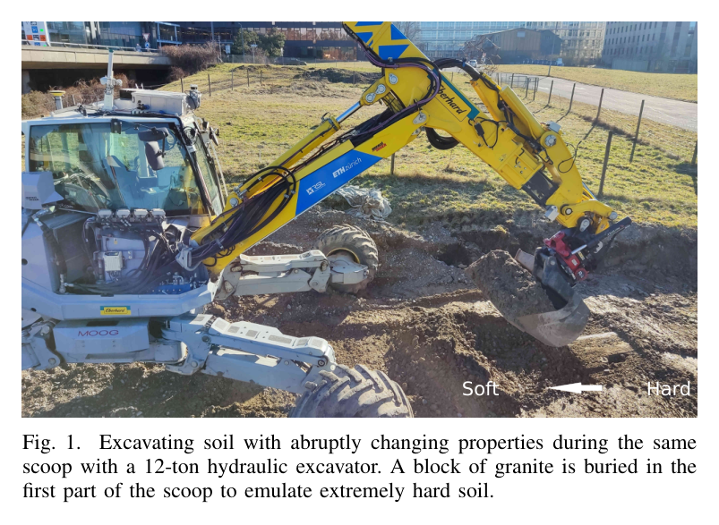
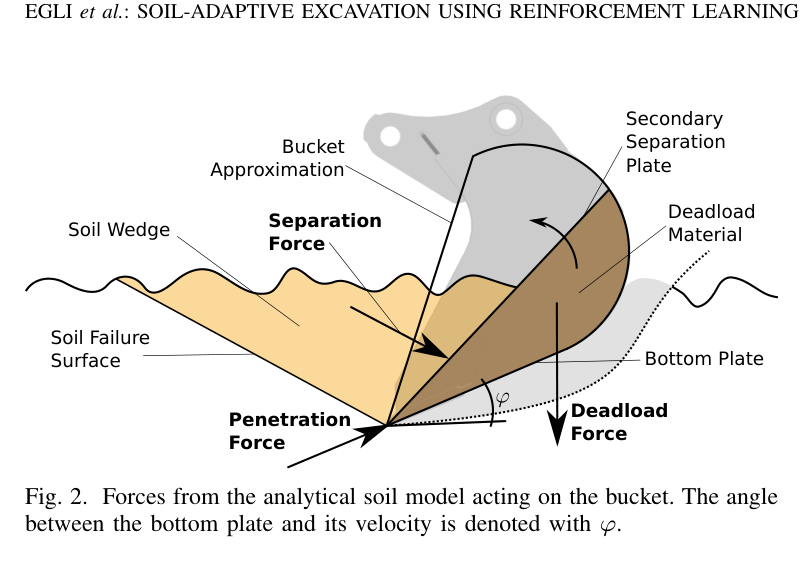
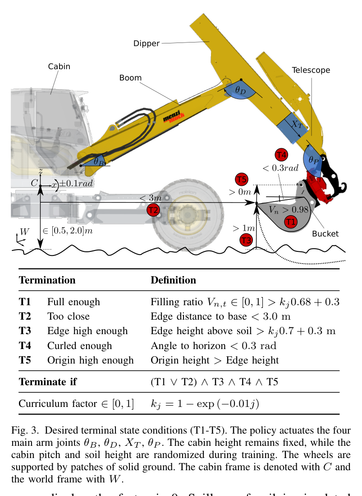
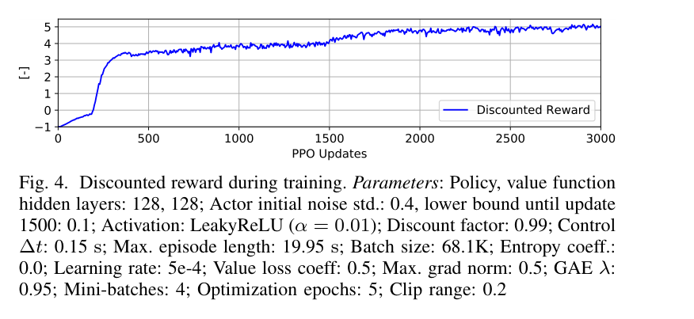
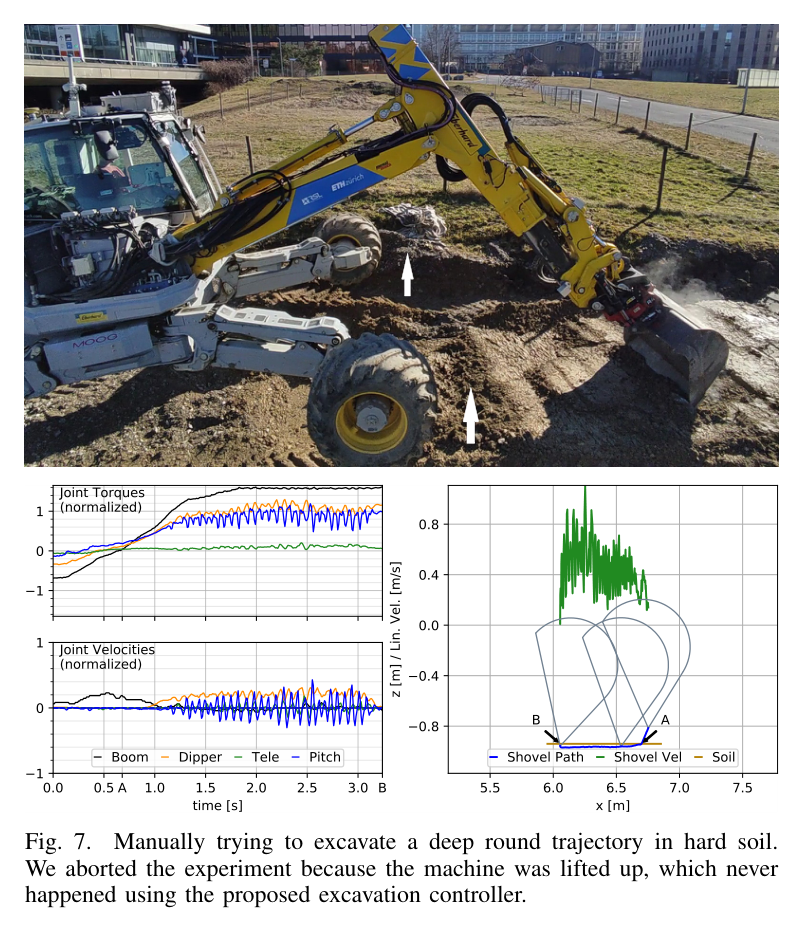
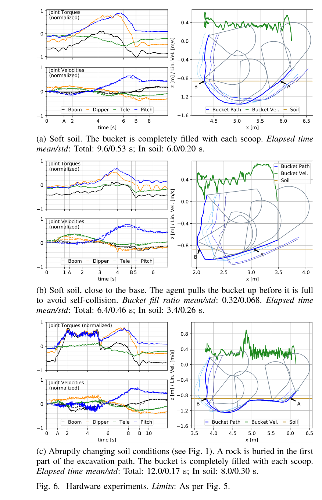
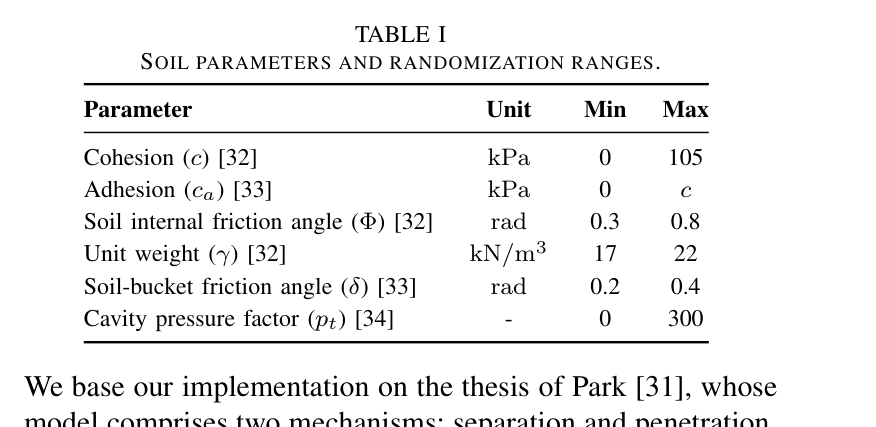
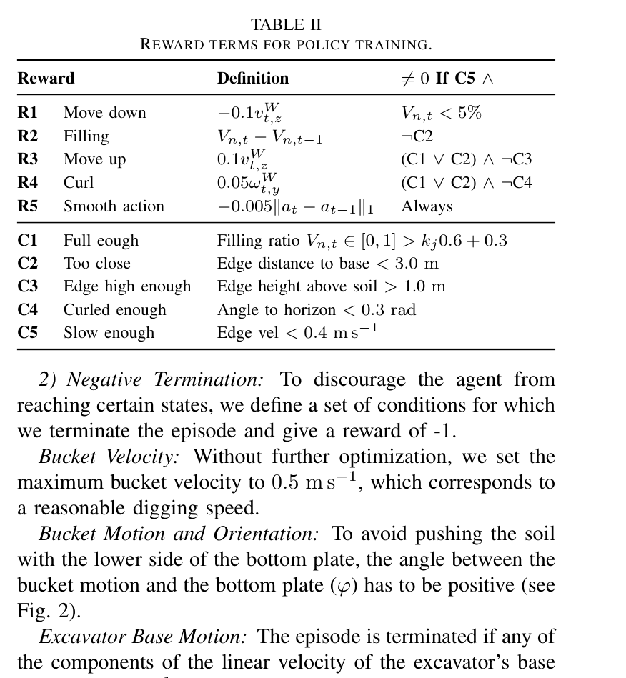
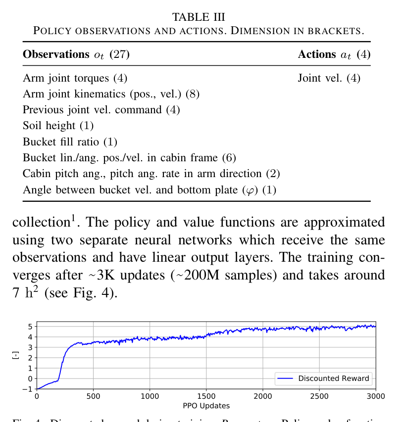

Soil-adaptive excavation using reinforcement learning
한줄 요약 — 토질 파라미터를 입력하지 않고 관절 토크·기구 상태만 보는 PPO 정책을 2억 sample의 무작위 FEE 토양에서 학습해 standard pilot-stage valve의 속도제어기로 전이했으며, 12 t HEAP가 soft soil은 9.6 s, 화강암-연질 급변 조건은 12.0 s에 매회 bucket을 채우도록 한 soil-adaptive excavation controller다.
1.연구 배경 및 동기
토질을 미리 재지 않고 한 번의 굴착 안에서 힘 한계에 적응하기
굴착 효율을 높이려면 시간 소모가 큰 loading cycle 수를 줄이기 위해 한 scoop의 토량을 최대화해야 한다. 그러나 hard soil에서는 깊이 파고들면 actuator가 stall하거나 기계가 들리므로 얕고 긴 penetrate-and-drag 경로가 필요하고, soft soil에서는 깊고 짧은 penetrate-and-scoop가 유리하다. 실제 현장의 토질은 지질 조사만으로 정확히 알기 어렵고 같은 scoop 안에서도 매설 암석처럼 급변할 수 있어, 고정 trajectory를 정밀 추종하는 것보다 현재 저항을 감지해 경로 자체를 바꾸는 controller가 필요하다.
기존 kinematic trajectory optimization은 빠르지만 soil force와 machine torque limit를 무시하고, soil dynamics를 넣은 최적화는 trajectory 하나에 분 단위 계산과 사전 soil parameter가 필요하다. 사람이 만든 penetration·drag·scoop·lift 구간과 rule은 특정 기계에서 동작해도 새로운 토질·장비마다 calibration과 예외 처리가 늘어난다. force-reference 방식은 적응적이지만 standard excavator의 큰 valve deadband 때문에 고가의 high-performance servo valve retrofit이 필요했다.
해법은 FEE 토양을 넓게 randomize하고 joint torque·kinematics만 보는 정책으로 저항 적응을 학습하는 것이다.

원문 Figure 1 · PDF p.2 — Fig. 1. Excavating soil with abruptly changing properties during the same scoop with a 12-ton hydraulic excavator. A block of granite is buried in the first part of the scoop to emulate extremely hard soil.
정책은 arm torque·kinematics·이전 command·soil height·fill ratio·bucket state·cabin pitch 등 27차원을 보고 네 joint velocity를 낸다. soil 값은 숨기며 torque 제거 정책은 보수적으로 변했다.
처리 파이프라인
1
경량 굴착 simulator
CAD rigid body를 RaiSim에 구성하고 실제 arm velocity·torque limit를 적용한다. bucket path와 analytical soil force를 Jacobian으로 joint torque에 변환해 2D digging interaction을 계산한다.
처음에는 내려가고, soil을 채우며, full 또는 base에 가까우면 들어 올리고 curl하도록 R1~R4를 구성하고 action 변화 L1 penalty R5를 둔다. bucket 속도, base motion, self-collision, 비정상 자세를 넘으면 -1로 종료한다.
4
PPO 대규모 학습
128×128 LeakyReLU policy/value network와 GAE-PPO를 사용한다. 0.15 s control step, 최대 19.95 s episode, batch 68.1K로 약 3K update·2억 sample, 약 7시간 학습한다.
5
실기 velocity interface
12 t M545에서 cylinder pressure로 joint torque를 추정하고 IMU·arm/leg sensor로 자세·기구 상태를 얻는다. policy velocity를 PID+feed-forward valve-flow controller가 electric pilot-stage solenoid current로 변환한다.
6
hardware test
지면 위에서 시작해 soft, base-near, buried granite 조건을 반복하고 path-based fill, 시간, torque·velocity를 기록한다.
정책 π가 다양한 random soil episode에서 미래 reward 합을 최대화해 빠른 filling과 안전 constraint를 함께 학습한다.
terminal curriculum factor
k_j=1-\exp(-0.01j)
update j가 증가할수록 full ratio와 lift height의 성공 조건을 점차 엄격하게 만들어 초기 탐색과 최종 성능을 연결한다.

원문 Figure 2 · PDF p.4 — Fig. 2. Forces from the analytical soil model acting on the bucket. The angle between the bottom plate and its velocity is denoted with φ.

원문 Figure 3 · PDF p.5 — Fig. 3. Desired terminal state conditions (T1-T5). The policy actuates the four main arm joints θB, θD, XT , θP . The cabin height remains fixed, while the cabin pitch and soil height are randomized during training. The wheels are supported by patches of solid ground. The cabin frame is denoted with C and the world frame with W.

원문 Figure 4 · PDF p.6 — Fig. 4. Discounted reward during training. Parameters: Policy, value function hidden layers: 128, 128; Actor initial noise std.: 0.4, lower bound until update 1500: 0.1; Activation: LeakyReLU (α = 0.01); Discount factor: 0.99; Control ∆t: 0.15 s; Max. episode length: 19.95 s; Batch size: 68.1K; Entropy coeff.: 0.0; Learning rate: 5e-4; Value loss coeff: 0.5; Max. grad norm: 0.5; GAE λ: 0.95; Mini-batches: 4; Optimization epochs: 5; Clip range: 0.2
3.핵심 기술
FEE 기반 randomized soil interaction
separation·penetration·bottom friction·deadload를 analytical model로 계산한다. rigid-body dynamics보다 약 40배 빠르며 넓은 geotechnical randomization으로 model bias를 variation으로 바꾼다.
separation와 penetration force 중첩
6개 soil parameter의 넓은 randomization
bucket path 적분으로 fill volume 근사
torque proprioception 기반 online 적응
soil 값 없이 pressure-derived joint torque와 kinematics로 penetration·drag·curl을 바꾼다. soft에서는 깊게 파고, hard에서는 dipper torque limit에서 얕고 길게 drag한다. torque 제거 정책은 보수적이었다.
27차원 observation 중 4 joint torque
soil property는 hidden
네 joint velocity action으로 standard valve 호환
안전 상태와 효율을 함께 형성하는 reward
fill·lift 성공조건과 과속·base 0.1 m/s·self-collision 종료를 함께 둔다. bucket 0.4 m/s부터 reward를 끄고 0.5 m/s에서 종료하며 action 변화도 벌점화한다.
bucket velocity 0.4 m/s reward margin과 0.5 m/s termination
실기는 modified Menzi Muck M545 12 t walking excavator다. standard proportional main valve, electric pilot stage, pressure sensor, IMU, arm IMU와 leg magnetostrictive sensor를 사용한다.
hardware scenario는 soft-to-medium soil, base에 매우 가까운 초기 bucket, shallow granite block 뒤 soft soil로 급변하는 경로이며 각 조건을 여러 번 반복했다.
실험 프로토콜
simulation에서 soft·medium·hard parameter 조합을 각각 실행해 path, fill ratio, total/in-soil time, joint torque·velocity를 비교했다.
실기에서는 bucket을 사람이 지면 위에 배치한 뒤 policy를 켜고 반복 trajectory를 겹쳐 consistency를 확인했다.
fill ratio는 실제 계량이 아니라 bucket path를 soil 안에서 적분하고 모든 절삭 material이 bucket에 남는다고 가정한 근사치다.
granite block을 얕게 묻어 hard-to-soft 전이를 만들고, 수동 deep trajectory가 wheel을 들자 안전상 중단했다.
비교 기준
고정 trajectory controller와의 정량 table 비교는 없다.
torque observation 제거 정책은 보수적이고 torque limit 아래에서 비효율적으로 동작한 내부 ablation이다.
manual deep-round hard-soil command는 machine lift 위험을 보여주는 안전 반례다.
원문 Figure 6 · PDF p.7 — Fig. 6 shows the results of testing the controller on the real machine in different scenarios. The bucket is placed manually above the ground before activating the controller. We repeat each experiment multiple times to verify the consistency and report the final bucket fill factor and the elapsed time. Note that the shovel fill factor is only an approximation as it is computed by integrating the bucket path through the soil and assumes that all the material ends up in the bucket. Joint torques and desired and measured velocities are shown for the bold bucket path. The other runs are shown in thin lines and show a similar course (torques and velocities are omitted for clearness of the plots). The variations arise from differences in the initialization and soil conditions which slightly change after each dig. Fig. 6a shows digging in soft to medium soil. The tra- jectories lie in between soft and medium soil in simulation (see Fig. 5a and Fig. 5b). Since the joint velocities do not perfectly follow the commands due to delays and deadzones in the hydraulic actuation [43], the bucket velocity slightly exceeds 0.4 m s−1. In Fig. 6b we place the bucket very close to the excavator. Since the agent was trained to avoid self-collisions, thus pulling the bucket up if it is too close to the machine, the bucket is only partially filled. To test the controller in hard soil, we buried a block of granite at a shallow depth because the soil on the test site is relatively soft. As is shown in Fig. 6c, the bucket can only penetrate to the depth of the rock and subsequently drags the bucket over the rock while still applying large forces also downwards with the boom joint, without lifting up the machine from the ground, similar to the simulation experiment (see Fig. 5c). This is essential to rip open hard ground and excavate efficiently. At the end of the block, the bucket reaches softer soil and penetrates deeper to build up again large forces to fill up the bucket quickly. The bucket velocity stays below the threshold of 0.4 m s−1 except for the moment of transition between hard and soft soil where the joint velocity controllers cannot react fast enough. Finally, we demonstrate that the machine is indeed capable of lifting itself up if the digging trajectory is not adjusted to the encountered soil conditions. We manually push the boom downwards while pulling the dipper towards the machine on the hard soil, as if we were to excavate a deep, round trajectory intended for soft soil (see Fig. 7). The joint torques, in particular also at the boom joint, are so high that the front wheels of the machine are lifted. The torque of the boom joint

원문 Figure 7 · PDF p.8 — Fig. 7. Manually trying to excavate a deep round trajectory in hard soil. We aborted the experiment because the machine was lifted up, which never happened using the proposed excavation controller.
핵심 결과 해석
simulation에서 soft soil은 10.0 s 전체, 5.9 s soil 내부로 fill ratio 1을 달성했고, medium soil은 9.3/5.1 s에 fill ratio 1이었다. hard soil은 arm 전체 작업범위를 drag해도 fill ratio 0.8에 그쳤지만 17.3/13.2 s 뒤 base 가까이의 self-collision을 피하려고 bucket을 들어 올렸다. 토질이 단단해질수록 penetration depth가 얕아지고 dipper가 torque limit에서 길게 drag하는 행동이 자연스럽게 나타났다.
실기 soft soil에서는 매 scoop가 완전히 찼고 total time 평균/표준편차는 9.6/0.53 s, in-soil은 6.0/0.20 s였다. base 가까이 시작한 경우에는 충전보다 self-collision 회피를 우선해 fill ratio 0.32/0.068, total 6.4/0.46 s, in-soil 3.4/0.26 s로 일찍 lift했다. 실패가 아니라 명시적 terminal preference가 실기에서도 유지된 사례다.
granite-soft 급변 조건에서는 block 위를 얕게 drag한 뒤 soft soil에서 더 깊게 들어가 매 scoop를 채웠다. total 12.0/0.17 s, in-soil 8.0/0.30 s였고 정책에서는 machine lift가 없었다.
정량 결과
평가 항목
정량 결과
조건·맥락
원문 근거
simulation soft soil
fill=1.0, total 10.0 s, in-soil 5.9 s
c=0, ca=0, φ=0.4, γ=19 kN/m³, δ=0.4, pt=1
PDF p.7
simulation hard soil
fill=0.8, total 17.3 s, in-soil 13.2 s
self-collision 회피를 위해 full 전에 lift
PDF p.7
hardware soft soil
full each scoop; total 9.6±0.53 s, in-soil 6.0±0.20 s
soft-to-medium test field 반복 실험
PDF p.8
hardware base-near start
fill 0.32±0.068; total 6.4±0.46 s
base 3.0 m 이내 self-collision 회피 종료
PDF p.8
hardware 급변 토질
full each scoop; total 12.0±0.17 s, in-soil 8.0±0.30 s
얕게 매설한 granite block 다음 soft soil
PDF p.8
실패 사례와 경계조건
hard simulation은 reach 끝에서 fill 0.8로 종료했다.
base-near 실기는 collision 회피로 fill 0.32에 그쳤다.
path-based fill은 spillage·compaction을 측정하지 못한다.

원문 Figure 6 · PDF p.8 — Fig. 6. Hardware experiments. Limits: As per Fig. 5.
5.한계 및 향후 연구
현재 한계
horizontal ground를 가정하고 soil height를 wheel height 평균으로 추정해 slope·uneven terrain perception을 사용하지 않는다.
bucket fill volume은 경로 적분과 모든 material 유지 가정에 의존해 실제 적재량·spillage를 직접 관측하지 않는다.
pressure-derived torque와 kinematics로 unknown soil에 맞춰 penetration·drag·curl을 바꾸는 저수준 digging primitive다. standard-valve velocity interface라 상위 planner와 장비 적용에 유리하다.
상위 planner는 조기 종료를 안전·도달성 신호로 받아 다음 공격점이나 chassis reposition을 정해야 한다.
압력 기반 torque observation을 soil-adaptive bucket primitive의 공통 상태로 사용해 토질 사전조사 의존을 줄일 수 있다.
policy의 fill·reach·collision 종료 원인을 상위 excavation planner가 받아 공격점 이동이나 chassis reposition을 결정할 수 있다.
FEE parameter randomization에 slope·layer·stone geometry를 추가하면 mixed ground와 경사면 굴착으로 확장 가능하다.
실시간 load·elevation sensing을 더하면 path-integrated fill estimate를 교정하고 productivity reward를 직접 최적화할 수 있다.
7.전체 그림·표
본문 핵심 위치에 배치하지 않은 원문 Figure와 Table을 원문 페이지 순서로 수록한다.

원문 Table I · PDF p.4 — TABLE I SOIL PARAMETERS AND RANDOMIZATION RANGES.

원문 Table II · PDF p.5 — TABLE II REWARD TERMS FOR POLICY TRAINING.

원문 Table III · PDF p.6 — TABLE III POLICY OBSERVATIONS AND ACTIONS. DIMENSION IN BRACKETS.